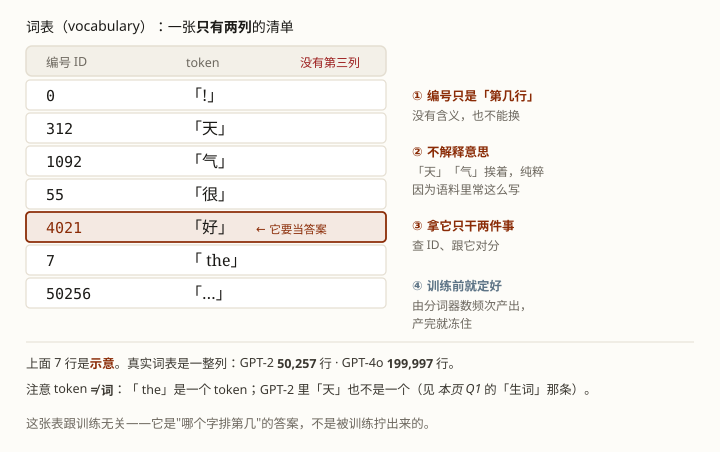
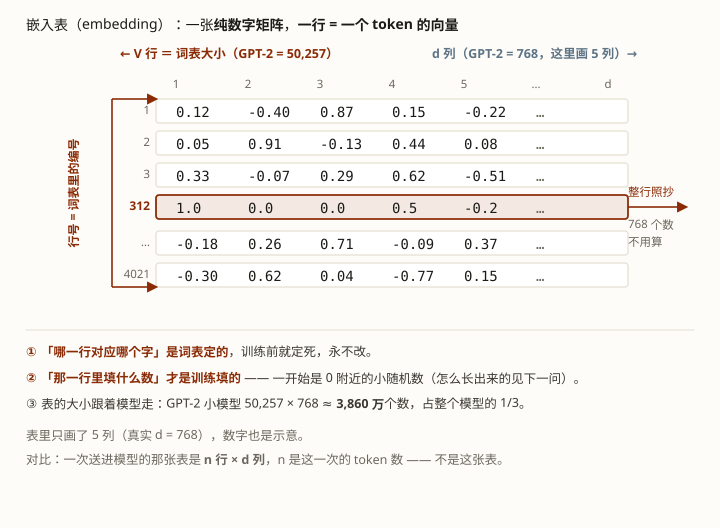
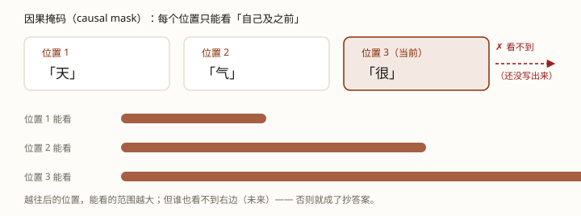

初学版讲「是什么」，这篇答「为什么 / 还有什么坑」。按需跳读——初学版讲到相关处用括号指过来，剩下的收在它的文末清单里。
只收读完初学版仍会冒出来的疑问。初学版已经讲清楚的（比如"token 不是向量""是 n 行不是一根"），这里就不重复啦。
想把整条链（文字 → 下一个字 → 下一轮）一次看完，去 第 2 课进阶 · 总图；本篇每一问都挂在那一环上。
总链先放这儿，方便对照：文字 → token → 编号 → 向量 → [注意力 → 残差 → FFN → 残差] × N → 打分 → 百分比 → 采样
对应初学版第 1 节的"查词表"那一步。这一句里"词表"是直接拿来用的，这儿展开说：
它不是解释意思的词典，就是一张清单：模型认识的每一个 token 都列上，每条配一个编号。所谓"对号"，查的就是这张表。
cl100k_base）＝ 100,256；GPT-4o（o200k_base）＝ 199,997；Llama 3 ＝ 128,000。
对应初学版第 1 节的"查嵌入表"那一步（初学版只写了"拿编号去查第 N 行"，没细说这张表本身）。这里补四件它没讲的。（"这串数字会被反复改写"这件事，文末附 · 四个别误会已经讲过，这里就不重复啦。）

对应 第 0 课那套「出题 → 扣分 → 拧」。第 0 课的玩具只有一张表、答案直接写在表上；真实模型多了一层编号，就得多交代一句。这里分开答三个问题：表什么时候定下来 · 一开始里面是什么 · 每一步在拧什么。
训练开始的那一刻，V × d 的矩阵已经分配好了：V ＝ 词表大小（GPT-2 是 50,257），d 是这个模型自己选的（GPT-2 是 768）。哪一行对应哪个 token，也在这时定死——因为词表早就冻结了。
所以准确的说法不是"一开始没有嵌入表"，而是：一开始有一张形状已定、内容全随机的表。
初始化用的是0 附近的小随机数（GPT-2 取的是标准差 0.02 的正态分布）。此时模型给每个字的打分基本随机，平均扣分约 ln(50257) ≈ 10.8——训练刚开始的模型是在均匀地乱说。
这是最容易卡住的一处。用「天气很好」走一遍：
输入侧 「天气很」→ 查词表 → 312, 1092, 55 → 拿这三个编号去嵌入表取第 312/1092/55 行
＝ 三根向量，进模型
目标侧 「好」 → 查词表 → 4021
＝ 训练信号：第 4021 个分数该最高
输出侧 最后一根向量 → 跟词表每一行都算一遍相似度 → 得到 50257 个分数
其中第 4021 个，就是「好」的分数目标字的编号来自词表，而词表在训练之前就冻结了。它跟嵌入表第 4021 行此刻写着什么数字毫无关系——所以"一开始全是随机数"一点不妨碍我们定义这道题。
换个说法：训练要填的是「第 4021 行里填什么数」，不是「第几行对应哪个字」。后者早就定死了，前者才是训练干的活——这两件事混在一起，就会觉得"没有表怎么训练"。
还是第 0 课那四步，落到嵌入表上就是：
所以那 3860 万个数字，没有一个是人填的，也没有一个是事先安排好的——每一轮都被扣分推一小步，跑完整个语料之后，才长出"「好」跟「很」关系近"这类规律。
（顺带解释「权重共享」为什么能成立：共享时「好」那一行同时出现在两处——进来时当上下文、出去时当打分依据，而训练本来就同时在这两个方向上拧它，所以它们能长在同一行。坑二见 Q2。）
对应初学版第 1 节的三步链。链上第一步第二步看着像"模型在干活"，其实不是：
| 步骤 | 算不算模型 | 说明 |
|---|---|---|
| 分词 tokenizer | ❌ 不算 | 配套的小程序，把文字切成 token |
| 查词表 vocabulary | ❌ 不算 | 同一个小程序，把 token 变成编号 |
| 查嵌入表 embedding | ✅ 算 | 就是模型的第一层，参数是训练学出来的 |
两种口径都对，看你把边界划到哪：
差别只在"词嵌入算不算模型的开头"。因为它是训练学出来的参数（会被梯度更新），算。所以严口径更准：模型 ＝ 词嵌入表 ＋ N 个 Block ＋ LM Head，分词器站在门外。
都要做，但便宜的那几步每次都重来，贵的那几步靠缓存避开。
"每轮都查嵌入"确实是重复，但那就是一次表查找，成本可忽略；真正被缓存省掉的是后面几十层的计算。
对应初学版第 1 节末的「送进模型、开始被计算的就是这整张表」，和第 2 节的「进进出出都是同样形状」。（初学版的流程图左边那一列标着每一步的形状，第 ④→⑤ 站都是 3 行 × d 列。）初学版说"是表，不是一根"，这里答为什么非得这样。
核心在权重共享（weight sharing）：表里的 n 行用的是同一套换算规则，不是 n 套。更像"一个老师同时批改 n 份卷子，用同一把尺子"。
d），同一套规则才能通吃所有位置、所有长度。对应初学版第 3 节①「注意力」里那句"看不到后面"。初学版只给了结论，这里答为什么。
不能随便看。每个位置只能看自己和它之前的那些行，看不到后面——后面还没写出来。这个硬规定叫因果掩码（causal mask）。
为什么必须这样？模型的任务是"猜下一个字"，要是能看到后面的字，就成了抄答案。

对应初学版第 3 节③「FFN」。初学版说它"补充知识、推动概念"，这里展开。
先纠正一个用词造成的误会：它不是在"检查"什么。要检查的那个结果这时候还没算出来——预测（打分）要到最后一站才发生。
它做的是一次更细的改写。研究发现它很像一张"模式 → 补充信息"的查找表：当这串数字里出现某种模式，它就往里补充对应的信息，把那个概念往上抬。
论文的原例：当前文是 Eiffel Tower is located in（埃菲尔铁塔位于）时，某一条"记忆"被触发，把 「Paris」 的分往上推。
所以与其说"检查 / 消化"，不如说"补充知识、推动概念"。
对应初学版第 3 节④「走完一层，换一层再来一遍」。初学版说"每行数字被反复修改几十遍"，那改到一半的能不能用？
能，而且结果有点意外。就算只走一半的层，拿当时的数字去词表里对分，也能猜出个大概。
这说明预测是一层一层"磨"出来的，不是最后一层突然顿悟。Geva et al.（EMNLP 2022）甚至把它看成"逐层推动概念"的过程。
（这个手法有个名字叫 logit lens：把中间那层的数字，直接接到最后那道"打分"的表上，偷看它当时想说哪个字。正式出处见下面的 Belrose et al. 2023。）
对应初学版第 4 节末那句"表的宽度从头到尾是 d，只是行数多一行"。那这张表最多能多大？
"上下文"的底层含义，就是这条流水线一次最多能同时处理多少个 token 的位置。上限叫上下文窗口（context window）。
但它数的不只是你输入的——模型自己写出来的字也占位置，因为它们也得留在"前文"里供后面回头去看：
上下文窗口 = 输入的 token + 已经写出来的 token，加起来不能超过上限。
上限卡在显存：每个位置都要留一份 K/V，位置越多占得越多。这正是第 3 课 KV Cache 的代价。
什么都不填，也不占。上限不是"必须填满的固定宽度"。刚开会话只有 3 个 token，就只用掉 3 个位置——模型天生处理变长序列（0 到上限之间随便多少都行）。
会，但只在一种情况：一次同时算好几条长短不一的句子时（为了批量快）。短的会被补上填充（padding）的假 token，而补的部分会被遮住（掩码 masking）——模型看不见，也不参与计算。
记住这一句就够了：空位上没有东西；就算临时补了假货，也是被遮掉的，等于没有。
对应初学版第 3 节⑤「最后一站：打分，然后挑字」，也就是开头那条总链的最后一环。初学版只说"按百分比抽一个"，听着像只有一种抽法。其实从分表里挑字有好几种挑法，而且怎么挑是你可以调的——那一组旋钮叫采样参数，随请求一起传。
模型只负责给出那张分表（logits）。分表之后的事，模型管不着。
温度、top_p 这些一个都不改分表，只改"从分表里挑一个"的规则。所以调温度不会让模型变聪明或变笨——只会让它的话更多样，或者更保守。
| 旋钮 | 干什么 | 效果 |
|---|---|---|
temperature温度 |
换算百分比之前，把所有原始分除以 T | 只改差距有多悬殊，不改名次。T = 1 原样；T 越小越尖（几乎只挑那个高的），T 越大越平（小概率的字也有机会） |
top_k |
只留分数最高的 k 个，其余直接出局 | 按个数砍尾巴 |
top_p（核采样 nucleus） |
从高到低累加百分比，加够 p 就停；留下的那一批叫核 | 按攒够多少砍尾巴——分布尖就少留几个，分布平就多留几个 |
seed种子 |
让"抽"这个动作可以复现 | 不改分布，只固定运气 |
把温度推到头，就看见了另一种挑法。T 推向 0 时，百分比会塌成一个点，"按百分比抽"退化成永远挑最高分——那叫贪心（greedy），已经不是抽了。T = 1 时分数原样不动，换算出来的就是模型给的那个分布本身。
通行顺序是：先按温度调锐度 → 再用 top_k / top_p 砍尾巴 → 最后从剩下的里面抽（HuggingFace 的 generate 里就是按这次序排成一串处理器）。所以两把刀叠着用时各砍各的，起作用的往往是更紧的那把。
模型只算到分表为止。真正动手挑的，是跑模型的那个推理引擎——vLLM、SGLang，或者各家 API 的服务端。所以同一个模型换一家部署，同样的参数不保证挑出一模一样的字。
因为 harness 把旋钮收走了，替你定了一套默认值，你只管写提示词。藏起来不等于不存在——它正是"同一个 prompt 两次答案不一样""评估跑两遍对不上"的来源。什么时候该自己动手调，见 速查 · 采样参数。
脚本在工作区：exercises/llm/0001-sampling-params.py。它只做最后那一步"挑字"，把四个旋钮各拧一遍。
python exercises/llm/0001-sampling-params.py数字全是手编的、故意只有 5 个候选。下面是输出摘录（跑了就有完整的）。
[2] 旋钮① temperature：换算百分比之前，先把所有分数除以 T
T = 0.2 换算后的百分比：
「好」98.6% 「冷」 1.2% 「坏」 0.2% 「差」 0.0% 「热」 0.0%
T = 1.0 换算后的百分比：
「好」49.7% 「冷」20.7% 「坏」13.9% 「差」 9.3% 「热」 6.4%
T = 2.0 换算后的百分比：
「好」33.7% 「冷」21.8% 「坏」17.8% 「差」14.6% 「热」12.1%
[8] 每种旋钮各抽 2000 次，看真实的落点分布
T = 0.5（偏尖）
「好」77.0% 「冷」13.2% 「坏」 5.5% 「差」 2.8% 「热」 1.6%
T = 2.0（偏平）
「好」33.2% 「冷」21.9% 「坏」18.1% 「差」15.5% 「热」11.3%
T = 1.0 + top_p = 0.7（只留下「好」「冷」，其余三个永远抽不到）
「好」70.5% 「冷」29.5% 「坏」 0.0% 「差」 0.0% 「热」 0.0%看最后一行：被砍掉的那三个，百分比直接变成 0，永远抽不到——这就是"砍尾巴"的字面意思。
温度设成 0、种子固定，也不保证逐字复现。服务端把多条请求拼在一起算、浮点加法的顺序不固定，都可能让结果差上一两个字。能要求的是"结果等价"，不是"一字不差"。（第 3 课那条"缓存不改变怎么生成"说的是另一半：输出会不会变，看的是这最后一步，跟前面省没省算力无关。）
① 别去猜每个数字的含义。不要想象"第 1 个数字代表'动物性'、第 2 个代表'大小'"。这些数字人读不懂，是模型自己学出来的。
② 它不是词典里的意思，而是"此刻、在这句话里"的意思——所以会随前文变化。
③ 它不是死的。整条流水线剩下的工作，就是反复修改这串数字。
④ token 也不是向量。token 是文本零件，先变成编号，编号才变成向量（见 Q1）。
Q1 为什么输入必须是「n 行 × d 列」的表，而不能拼成一根？
Q2 上下文窗口的消耗，包含下面哪一项？
Q3 关于 FFN，哪一句是对的？
Q4 把 temperature 从 1.0 调到 0.2，会发生什么？
Q5 top_p 设成 0.8，是在做什么？
Eiffel Tower is located in → 推动「Paris」。config.json 的 initializer_range。top_p（核采样）的原始出处："砍掉不可靠的尾巴，只从模型真正有把握的那批里抽"。
回初学版：LLM 底层 · 第 1 课（初学版）
前置：LLM 底层 · 第 0 课 · 模型是怎么学出来的
顺着往下：LLM 底层 · 第 2 课 · 一次请求的两段 · 第 3 课 · KV Cache 与缓存命中 · 第 4 课 · 批处理
主线：Agent 原理篇 · 第 1 课 · Agent 到底是什么？
术语表：张量 · 因果掩码 · 权重共享 · 填充 / 掩码 · 自回归生成 · FFN